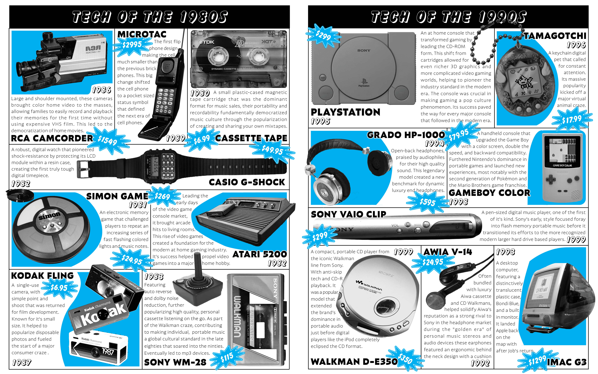
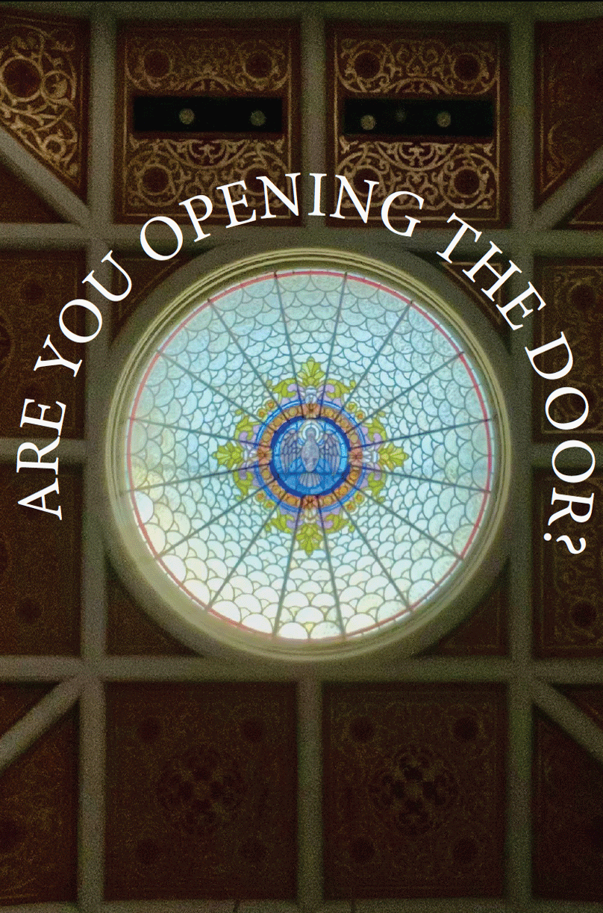

Isabella Mcgaugh
Graphic Designer + UX/UI Designer
Knoxville / 2024-2026 Selected Work
Craft + concept + interaction
graphic design · web design · motion · editorial · ux/ui · graphic
design · web design · motion · editorial · ux/ui ·
Selected Work

